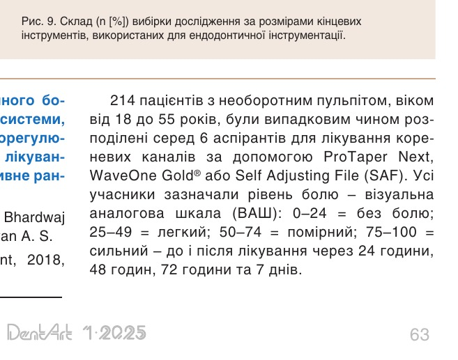
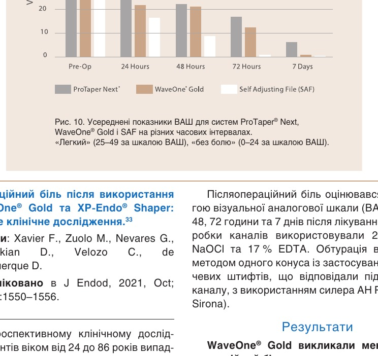
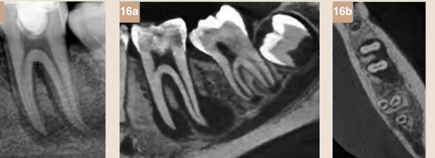
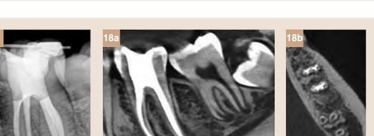
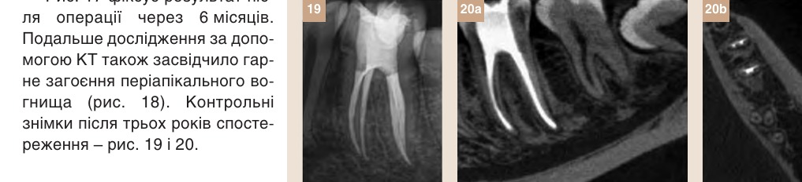

Матеріали Дентсплай Сірона · журнал «ДентАрт» 2025 №1
WaveOne® Gold – ендодонтична система нового покоління. Частина 3
WAVEONE® GOLD SCIENTIFIC MANUAL
Продовження. Початок — «WaveOne® Gold — ендодонтична система нового покоління» (журнал «ДентАрт» 2024 №3) і «Частина 2» (журнал «ДентАрт» 2024 №4). Закінчення.
4. Якість обтурації
Більшість літературних джерел підтримують важливість етапів формування та очищення кореневих каналів, але дуже мало досліджень зосереджено на етапах обтурації. Метою обтурації кореневого каналу є запобігання проникненню бактерій і забезпечення періапікального загоєння.
Мікроскопічна та хімічна оцінка здатності до обтурації в овальних кореневих каналах за допомогою двох різних технік обтурації з використанням носія.31
Автори: Mancino D., Kharouf N., Hemmerle J., Haїkel Y.
Опубліковано в Eur J Dent, 2019. Vol. 13. Issue 2. P.166–171.
Мета цього дослідження полягала в тому, щоб дослідити тривимірний обтураційний ефект матеріалів Guttacore® та Thermafil® після формування каналу інструментами ProGlider™ і WaveOne® Gold Primary.
Усього в це дослідження було включено 24 видалені нижні премоляри людини з одним овальним каналом, які були розподілені на дві групи (n = 12) для обтурації за допомогою Guttacore® і Thermafil® з використанням силера AH Plus®. Пропорції заповнених гутаперчею ділянок, ділянок, заповнених силером, і пустот були оцінені за допомогою оптичного числового мікроскопа. Максимальне проникнення в дентинні трубочки вимірювалося за допомогою СЕМ. Хімічний аналіз з використанням енергетично-дисперсійної рентгенівської спектроскопії підтвердив спостереження зображень для обтураційних матеріалів на основі носія порівняно із силером на 2 мм (WL-2) та 5 мм (WL-5) від апексу.
Основні результати
- Обидві техніки показали схожу здатність до обтурації на 2 мм і 5 мм від апексу (див. деталі в таблиці 11).
- Максимальне проникнення в дентинні трубочки на 5 мм і 2 мм від апексу становило відповідно 96 і 48 мкм для Guttacore®, тоді як для Thermafil® ці показники були 109 мкм і 55 мкм.
- Статистичних відмінностей між двома оціненими техніками обтурації на основі носія не було виявлено.
Отже, обидві техніки можуть обтурувати овальні канали, сформовані за допомогою WaveOne® Gold. Варто згадати: автори зазначають, що техніка Guttacore® була менш технічно чутливою і менш складною у порівнянні з Thermafil®.
| Матеріал | Гутаперчею, 2 мм | Гутаперчею, 5 мм | Силером, 2 мм | Силером, 5 мм | Порожні, 2 мм | Порожні, 5 мм |
|---|---|---|---|---|---|---|
| GuttaCore® | 98.76 ± 0.004% | 99.19 ± 0.003% | 1.09 ± 0.004% | 0.61 ± 0.003% | 0.15 ± 0.001% | 0.20 ± 0.001% |
| Thermafil® | 98.33 ± 0.04% | 99.04 ± 0.02% | 1.54 ± 0.01% | 0.74 ± 0.003% | 0.13 ± 0.004% | 0.22 ± 0.001% |
Клінічні результати
Існує п'ять проспективних клінічних досліджень, що досліджували поломку інструментів або наявність післяопераційного болю при використанні системи WaveOne® Gold. Також проаналізовані складні клінічні випадки, включаючи лікування викривлених кореневих каналів.
Випадки поломки файлів WaveOne® Gold: проспективне клінічне дослідження.20
Автори: Bueno C. S. P., Oliveira D. P., Pelegrine R. A., Fontana C. E., Rocha D. G. P., Gutmann J. L. та інші.
Опубліковано в International Endodontic Journal, 2020. 53(9): 1192–1198.
Мета цього проспективного клінічного дослідження полягала в оцінці випадків поломки інструментів. Система WaveOne® Gold використовувалася на 750 молярах верхньої або нижньої щелепи (всього 2691 кореневий канал; 1104 інструменти; 2.43 канали/інструмент; максимум чотири канали/інструмент) у пацієнтів віком від 15 до 60 років, з повністю сформованими верхівками і курватурами каналів менше ніж 45°, оціненими за допомогою рентгенівських знімків. Лікування провадили три ендодонтисти – досвідчені оператори, які починали зі скаутингу/створення килимової доріжки із використанням K-файлів розміру 10 або 15, а потім використовували інструмент WaveOne® Gold Primary та, за необхідності, інструменти Small, Medium або Large у 2,5 % розчині NaOCl. Кожен інструмент після кожного використання оглядали за допомогою стоматологічного мікроскопа при 8-кратному збільшенні.
Усього на 2691 кореневому каналі жоден із 1104 інструментів WaveOne® Gold не зламався, тобто жоден із 38 інструментів розміру Small, 750 інструментів розміру Primary, 228 інструментів розміру Medium та 88 інструментів розміру Large не зламався.

Порівняння частоти післяопераційного болю після використання ротаційної системи, реципрокної системи та системи саморегулювання файлів під час ендодонтичного лікування упродовж одного візиту: проспективне рандомізоване клінічне дослідження.32
Автори: Saha S. G., Gupta R. K., Bhardwaj A., Misuriya A., Saha M. K., Nirwan A. S.
Опубліковано J Conserv Dent, 2018, May-Jun; 21(3): 333–338.
214 пацієнтів з необоротним пульпітом, віком від 18 до 55 років, були випадковим чином розподілені серед 6 аспірантів для лікування кореневих каналів за допомогою ProTaper Next, WaveOne Gold® або Self Adjusting File (SAF). Усі учасники зазначали рівень болю – візуальна аналогова шкала (ВАШ): 0–24 = без болю; 25–49 = легкий; 50–74 = помірний; 75–100 = сильний – до і після лікування через 24 години, 48 годин, 72 години та 7 днів.
Було виявлено значне зменшення післяопераційного болю у порівнянні з дооперайним болем з усіма вивченими системами інструментів, не було виявлено випадків сильного болю або загострення (див. рис. 10). При оцінці післяопераційного болю його класифікація зменшилася з «легкого» (25–49 за шкалою ВАШ) до «без болю» (0–24 за шкалою ВАШ) з усіма системами протягом 7 днів.
Система SAF показала менші показники післяопераційного болю порівняно з WaveOne® Gold через 24, 48 і 72 години, але схожі результати через 7 днів. З іншого боку, лікування інструментами WaveOne® Gold було глобально асоційоване з нижчими показниками післяопераційного болю в порівнянні з ProTaper® Next. Це зниження частоти болю пов'язане з реципрокним рухом, який, як очікується, спричиняє меншу апікальну екструзію дебрису, ніж ротаційний рух.

Післяопераційний біль після використання систем WaveOne® Gold та XP-Endo® Shaper: рандомізоване клінічне дослідження.33
Автори: Xavier F., Zuolo M., Nevares G., Kherlakian D., Velozo C., de Albuquerque D.
Опубліковано в J Endod, 2021, Oct; 47(10):1550–1556.
У цьому проспективному клінічному дослідженні 148 пацієнтів віком від 24 до 86 років випадковим чином отримали ендодонтичне лікування за допомогою систем інструментів WaveOne® Gold або XP-Endo® Shaper (FKG Dentaire, Ла Шо-де-Фон, Швейцарія), яке виконували п'ять досвідчених ендодонтистів. У дослідження включали лише зуби, що не мали симптоматики, премоляри або моляри з вітальною пульпою, які потребували ендодонтичного лікування для подальшого протезування, щоб дослідити лише фактори, пов'язані з підготовкою кореневих каналів, уникаючи будь-якого впливу передопераційної патології. Післяопераційний біль оцінювався за допомогою візуальної аналогової шкали (ВАШ) через 24, 48, 72 години та 7 днів після лікування. Під час обробки каналів використовували 2,5 % розчин NaOCl та 17 % EDTA. Обтурація виконувалася методом одного конуса із застосуванням гутаперчевих штифтів, що відповідали підготовленому каналу, з використанням силера AH Plus (Dentsply Sirona).
Результати
WaveOne® Gold викликали менший післяопераційний біль як у короткостроковій (значні відмінності), так і в довгостроковій (незначні відмінності) перспективі порівняно з XP-Endo® Shaper. Середній рівень болю для обох систем був у межах слабкого болю (див. таблицю 12). Вища частота болю при використанні XP-Endo® Shaper може бути зумовлена відмінностями у дизайні інструмента, а також типом руху, тобто ротаційним рухом на 800 об/хв, що може призводити до утворення та апікальної екструзії більшої кількості дебрису.
| Система | 0 | 1–3 | 4–6 | 7–10 |
|---|---|---|---|---|
| Біль через 24 год | ||||
| XPES | 52.7 | 40.5 | 6.8 | 0.0 |
| WOG | 73.0 | 21.6 | 2.7 | 2.7 |
| Біль через 48 год | ||||
| XPES | 32.4 | 51.4 | 16.2 | 0.0 |
| WOG | 89.2 | 8.1 | 2.7 | 0.0 |
| Біль через 72 год | ||||
| XPES | 60.8 | 36.5 | 2.7 | 0.0 |
| WOG | 97.3 | 2.7 | 0.0 | 0.0 |
| Біль через 7 днів | ||||
| XPES | 0.0 | 0.0 | 0.0 | 0.0 |
| WOG | 0.0 | 0.0 | 0.0 | 0.0 |
Вплив двох ротаційних і двох реципрокних NiTi систем на післяопераційний біль після повторного ендодонтичного лікування однокореневих різців: рандомізоване контрольоване дослідження.34
Автори: Çanakçi B. C., Er Ö., Genç Şen Ö., Sur S. N.
Опубліковано в Int Endod J, 2021. Nov; 54(11):2016–2024.
У цьому рандомізованому проспективному клінічному дослідженні 180 пацієнтів пройшли повторне ендодонтичне лікування однокореневих різців, яке було проведене понад 4 роки тому і показало обтурацію кореня, коротшу на 2–4 мм від радіографічної верхівки. Для повторного лікування використовувалися або ротаційні інструменти (ProTaper® Universal Retreatment або HyFlex EDM (Coltene-Whaledent)), або реципрокні (Reciproc® Blue (VDW, Німеччина) або WaveOne® Gold). Розчинник для видалення пломбувального матеріалу з кореневих каналів не використовувався, а для іригації застосовували 2,5 % NaOCl та 17 % EDTA. Для пломбування всіх каналів використовували техніку латеральної конденсації з використанням відповідних гутаперчевих штифтів та AH Plus® (Dentsply Sirona). Післяопераційний біль оцінювали за візуальною аналоговою шкалою (ВАШ) через 24, 48, 72 години та 7 днів після повторного лікування. Також була зафіксована кількість ужитих пацієнтами анальгетиків.
Результати
- Було відзначено значне зменшення післяопераційного болю з кожним днем у всіх досліджуваних системах інструментів, без виникнення набряків, але з деякими загостреннями, без достовірної різниці між групами (див. таблицю 13).
- Не було достовірної різниці між групами у кількості вжитих пацієнтами анальгетиків (див. таблицю 14).
Не було виявлено достовірних відмінностей у післяопераційному болю або прийомі пацієнтами анальгетиків серед цих 4 ротаційних або реципрокних NiTi систем.
| Система | 24 год | 48 год | 72 год | p* |
|---|---|---|---|---|
| ProTaper Universal Retreatment | 3.7 ± 2.2 | 1.4 ± 1.7 | 0.5 ± 0.8 | < .001 |
| Hyflex EDM | 2.9 ± 2.4 | 1.2 ± 1.4 | 0.8 ± 1.7 | < .001 |
| Reciproc Blue | 3.2 ± 2.1 | 1.9 ± 2.0 | 0.8 ± 1.2 | < .001 |
| WaveOne® Gold | 3.2 ± 2.2 | 1.4 ± 1.8 | 0.6 ± 1.0 | < .001 |
| p** | .419 | .210 | .728 |
| Система | 24 год | 48 год | 72 год | p* |
|---|---|---|---|---|
| ProTaper Universal Retreatment | 0.36 ± 0.68 | 0.11 ± 0.44 | 0.00 ± 0.00 | .000* |
| Hyflex EDM | 0.18 ± 0.49 | 0.04 ± 0.21 | 0.04 ± 0.21 | .022* |
| Reciproc Blue | 0.31 ± 0.73 | 0.20 ± 0.59 | 0.09 ± 0.28 | .095 |
| WaveOne® Gold | 0.33 ± 0.71 | 0.16 ± 0.56 | 0.02 ± 0.15 | .000* |
| p** | > .05 | > .05 | > .05 |
* Тест Фрідмана. ** Тест Краскела – Волліса.
Техніка інструментації не впливає на зниження кількості бактерій, післяопераційний біль та загострення: рандомізоване клінічне дослідження.35
Автори: Saber S. M., Alfadag A. M. A., Nawar N. N. G.
Опубліковано в International Endodontic Journal, 2022 [s. l.], v. 55, n. 5, 405–415.
Це проспективне клінічне дослідження мало на меті порівняти вплив рухів інструментів (ротаційного та реципрокного) на кілька аспектів, таких як післяопераційний біль, зменшення кількості бактерій і частота загострень. Загалом 66 пацієнтів були випадковим чином проліковані за допомогою ротаційних файлів One Shape 37/0,06 (Micro-Mega, Франція) або реципрокних WaveOne® Gold Medium 35/0,06 для лікування асимптоматичних однокореневих нижніх премолярів. Канали були іриговані 2,5 % NaOCl та 17 % EDTA. Післяопераційний біль оцінювався за візуальною аналоговою шкалою (ВАШ) через 24, 48, 72 години та 7 днів після повторного лікування. Зразки бактерій до і після лікування (формування та промивання) аналізувалися за допомогою кількісної полімеразної ланцюгової реакції (кПЛР) у режимі реального часу. Також реєструвалися випадки загострення.
Основні результати
- Жодних ранніх поломок або ятрогенних інцидентів не було зафіксовано. Лише три пацієнти повідомили про загострення: два з WaveOne® Gold і один з One Shape (Micro-Mega, Франція), що є статистично недостовірним.
- Зменшення кількості бактерій було значним, понад 94 %, після інструментальної обробки (формування і промивання) з One Shape або WaveOne® Gold, за результатами підрахунку колонієутворюючих одиниць. Цей показник становив понад 98 % з WaveOne® Gold і близько 96 % з One Shape за результатами кПЛР. Однак значних відмінностей між ротаційним і реципрокними рухами не було зафіксовано (див. таблицю 15), що підкреслює важливість механічного формування у поєднанні з іригацією NaOCl, також відомого як хіміко-механічне очищення, для відповідної дезінфекції каналу.
Було зафіксоване значне зменшення післяопераційного болю з кожним днем для обох досліджених інструментів (знову ж таки без вірогідних відмінностей між групами) без повідомлень про прийом анальгетиків. Це можна пояснити контролем робочої довжини за допомогою рентгенівських знімків та перевірки апекслокатором, а також використанням іригаційної голки з боковим отвором, яка забезпечує безпечну подачу розчину для іригації.
| Вимірювання | Sample | WaveOne® Gold | One-shape | p-value |
|---|---|---|---|---|
| CFU | S1 | 5.13 ± 0.13 | 5.03 ± 0.36 | 0.16 |
| S2 | 2.76 ± 0.68 | 2.75 ± 0.70 | 0.92 | |
| % зменшення | 94.24 ± 14.05 | 95.67 ± 11.25 | 0.65 | |
| qPCR | S1 | 5.49 ± 0.80 | 5.62 ± 0.79 | 0.52 |
| S2 | 2.70 ± 0.30 | 2.46 ± 0.79 | 0.11 | |
| % зменшення | 98.98 ± 1.76 | 96.23 ± 17.33 | 0.37 |
WaveOne® Gold реципрокні інструменти: клінічне застосування у приватній практиці: Частина 136 та Частина 2.37
Автори: Van der Vyver P., Vorster M.
Опубліковано в International Dentistry South Africa, 2017. Vol. 7. Issue 4. Повторно надруковано з дозволу Modern Dentistry Media.
P. Van der Vyver та M. Vorster опублікували кілька клінічних випадків, що ілюструють клінічні переваги повного протоколу WaveOne® Gold. У цьому розділі подано деякі з них.
Клінічний випадок 337
Пацієнт, 26-річний чоловік, звернувся з проблемами з девітальним правим нижнім першим моляром. Періапікальна рентгенографія, зроблена до початку лікування, показала дуже глибоко розташовану композитну реставрацію класу ІІ (рис. 11). Після підготовки доступу до кореневого каналу були знайдені три кореневі канали (два мезіальні та один дистальний) і визначена їх довжина (рис. 12). Початкова підготовка килимової доріжки з використанням файлів розмірів 08 і 10 була складною, що зумовлено S-подібною конфігурацією каналу в апікальних 5 мм обох мезіальних кореневих каналів.
Килимова доріжка була розширена за допомогою інструмента WaveOne® Gold Glider. Підготовка кореневого каналу розпочалася з використання файла WaveOne® Gold Small 20/07 до робочої довжини у всіх трьох кореневих каналах.
Препарування кореневого каналу було розширене в дистальному кореневому каналі за допомогою файла WaveOne® Primary Small 25/07 для створення більш глибокої форми.
Рис. 13 показує результат після лікування. Обтурація була виконана за допомогою системи Calamus® Dual (Dentsply Sirona), використовуючи два Small і один Primary WaveOne® Gutta Percha (Dentsply Sirona) та силер AH Plus® (Dentsply Sirona). Рентгенографія через рік спостереження – на рис. 14.

Клінічний випадок 437
Пацієнт, 19-річний чоловік, звернувся з проблемами девітального нижнього лівого моляра, ймовірно, через раніше встановлену негерметичну реставрацію на оклюзійній поверхні (рис. 15). На скані КТ виявлено великі періапікальні вогнища навколо мезіальних і дистальних коренів (рис. 16).

Після створення ендодонтичного доступу були виявлені чотири кореневі канали (два мезіальні і два дистальні). Канали мають великий діаметр, і з легкістю можна було використовувати K-файл розміру 20 до повної робочої довжини. Підготовка кореневих каналів виконана за допомогою одного інструмента WaveOne® Gold Medium розміром 35/06. Канали були іриговані і обтуровані, а зуб відновлений за допомогою SDR® (Dentsply Sirona), матеріалу для об'ємного заповнення бічної групи зубів, і покритий 2-міліметровим шаром композиту Ceram.x® Sphere TEC™ one (Dentsply Sirona).

Рис. 17 фіксує результат після операції через 6 місяців. Подальше дослідження за допомогою КТ також засвідчило гарне загоєння періапікального вогнища (рис. 18). Контрольні знімки після трьох років спостереження – рис. 19 і 20.

Висновки
Отже, були отримані такі висновки щодо системи WaveOne® Gold:
- Стійкість до циклічної втоми підвищується при використанні реципрокних файлів, таких як WaveOne® Gold, у порівнянні з ротаційними файлами5,17 і навіть у порівнянні з його попередником WaveOne®.18,19
- Інструменти WaveOne® Gold демонструють дуже передбачувану та стабільну стійкість до циклічної втоми,18 що підкреслює їхню надійність і безпечність використання.
- Інструменти WaveOne® Gold переважно перебувають у мартенситній фазі під час обробки каналу, що сприяє їхній гнучкості та стійкості до втоми.19
- Інструменти WaveOne® Gold показали швидший час підготовки і меншу кількість поломок порівняно з файлами ротаційного руху у вигнутих каналах у руках недосвідчених операторів на рівні, порівнянному з досвідченими,21 що підкреслює легкість їх використання та швидкість навчання.
- Щодо формувальної здатності, то WaveOne® Gold показав кращі результати порівняно з іншими системами файлів при видаленні дентину зі стінок каналу і схожі з іншими файлами результати у збереженні початкової кривизни каналу.25–27
- Обтурація з Guttacore® або Thermafil® після підготовки каналу інструментами WaveOne® Gold є успішною навіть в овальних каналах, забезпечуючи проникнення обтураційного матеріалу в дентинні трубочки та мінімальні порожнини.31
- Продемонстровано лікування складних клінічних випадків, які ілюструють високу продуктивність техніки WaveOne® Gold з використанням одного файла.36,37
- Клінічні дослідження, проведені на більш ніж 1350 пацієнтах, значною мірою підтвердили ефективність та безпеку системи WaveOne® Gold. Крім того, було встановлено, що після підготовки кореневого каналу за допомогою WaveOne® Gold післяопераційний біль значно зменшується з часом, але результати не є вірогідними у порівнянні з іншими досліджуваними NiTi системами.32–35
Ці ключові рецензовані дослідження, обрані серед більш ніж 200 публікацій, засвідчують, що WaveOne® Gold є однією з найбільш досліджених NiTi ендодонтичних систем. Загалом вони підкреслюють простоту, ефективність, безпечність та клінічні переваги інструментів WaveOne® Gold, які мають стати ендодонтичними інструментами вашого вибору. Більшість клінічних випадків можна лікувати лише одним інструментом у простий, надійний і швидкий спосіб завдяки м'якій реципрокній дії та спеціальній золотій термообробці.
Переклав Максим Скрипник
Література
- Pruett J. P., Clement D. J., Carnes D. L. Cyclic fatigue testing of nickel-titanium endodontic instruments. J Endod, 1997. 23(2): p. 77–85.
- Sattapan B., et al. Defects in rotary nickel-titanium files after clinical use. J Endod, 2000. 26(3): p. 161–5.
- Peters O. A., Barbakow F. Dynamic torque and apical forces of ProFile.04 rotary instruments during preparation of curved canals. Int Endod J, 2002. 35(4): p. 379–89.
- Yared G. Canal preparation using only one Ni-Ti rotary instrument: preliminary observations. Int Endod J, 2008. 41(4): p. 339–44.
- De-Deus G., et al. Extended cyclic fatigue life of F2 ProTaper instruments used in reciprocating movement. Int Endod J, 2010. 43(12): p. 1063–8.
- Webber J. M. P., Pertot W., Kuttler S., Ruddle C. J., West J. D. The WaveOne single-file reciprocating system. Roots, 2011. 1: p. 28–33.
- Vorster M., van der Vyver P. J., Paleker F. Influence of Glide Path Preparation on the Canal Shaping Times of WaveOne Gold in Curved Mandibular Molar Canals. J Endod, 2018. 44(5): p. 853–855.
- Caron G., et al. Effectiveness of different final irrigant activation protocols on smear layer removal in curved canals. J Endod, 2010. 36(8): p. 1361–6.
- Hieawy A., et al. Phase Transformation Behavior and Resistance to Bending and Cyclic Fatigue of ProTaper Gold and ProTaper Universal Instruments. J Endod, 2015. 41(7): p. 1134–8.
- Shen Y., et al. Current challenges and concepts of the thermomechanical treatment of nickel-titanium instruments. J Endod, 2013. 39(2): p. 163–72.
- De-Deus G., et al. Apically extruded dentin debris by reciprocating single-file and multi-file rotary system. Clinical Oral Investigations, 2015. 19(2): p. 357–361.
- Shen Y., et al. Defects in Nickel-Titanium Instruments after Clinical Use. Part 5: Single Use From Endodontic Specialty Practices. Journal of Endodontics, 2009. 35(10): p. 1363–1367.
- Letters S., et al. A study of visual and blood contamination on reprocessed endodontic files from general dental practice. British Dental Journal, 2005. 199(8): p. 522–525.
- Zupanc J., Vahdat–Pajouh N., Schäfer E. New thermomechanically treated NiTi alloys – a review. Int Endod J, 2018. 51(10): p. 1088–1103.
- A critical analysis of research methods and experimental models to study apical extrusion of debris and irrigants. International Endodontic Journal, 2022. 55: p. 153–177.
- Hargreaves L. H. B. K. M. Cohen's Pathways of the Pulp. 12 ed. 2020: Elsevier Health Sciences (US).
- Çapar I. D., Arslan H. A review of instrumentation kinematics of engine-driven nickel-titanium instruments. International Endodontic Journal, 2016. 49(2): p. 119–135.
- Scott R., et al. Resistance to cyclic fatigue of reciprocating instruments determined at body temperature and phase transformation analysis. Australian Endodontic Journal, 2019. 45(3): p. 400–406.
- Sobotkiewicz T., et al. Effect of canal curvature location on the cyclic fatigue resistance of reciprocating files. Clinical Oral Investigations, 2021. 25(1): p. 169–177.
- Bueno C. S. P., et al. Fracture incidence of WaveOne Gold files: a prospective clinical study. International Endodontic Journal, 2020. 53(9): p. 1192–1198.
- Dablanca–Blanco A. B., et al. Influence of operator expertise on glide path and root canal preparation of curved root canals with rotary and reciprocating motions. Australian Endodontic Journal, 2022. 48(1): p. 37–43.
- Alovisi M., et al. Micro-CT evaluation of rotary and reciprocating glide path and shaping systems outcomes in maxillary molar curved canals. Odontology, 2022. 110(1): p. 54–61.
- Medeiros T. C., et al. Shaping ability of reciprocating and rotary systems in oval-shaped root canals: a microcomputed tomography study. Acta Odontol Latinoam, 2021. 34(3): p. 282–288.
- Arumugam S., et al. Micro–computed tomography evaluation of dentinal microcracks following canal preparation with thermomechanically heat-treated engine-driven files. Aust Endod J, 2021. 47(3): p. 520–530.
- Haupt F., Pult J. R. W., Hülsmann M. Micro-computed Tomographic Evaluation of the Shaping Ability of 3 Reciprocating Single-File Nickel-Titanium Systems on Single- and Double-Curved Root Canals. J Endod, 2020. 46(8): p. 1130–1135.
- Perez Morales M. L. N., et al. Micro-computed Tomographic Assessment and Comparative Study of the Shaping Ability of 6 Nickel–Titanium Files: An In Vitro Study. J Endod, 2021. 47(5): p. 812–819.
- Van der Vyver P. J., et al. Root Canal Shaping Using Nickel Titanium, M-Wire, and Gold Wire: A Micro-computed Tomographic Comparative Study of One Shape, ProTaper Next, and WaveOne Gold Instruments in Maxillary First Molars. J Endod, 2019. 45(1): p. 62–67.
- Vemisetty H., et al., Synchrotron radiation–based micro–computed tomographic analysis of dentinal microcracks using rotary and reciprocating file systems: An in vitro study. J Conserv Dent, 2020. 23(3): p. 309–313.
- Peters O. A., Schonenberger K., Laib A. Effects of four Ni-Ti preparation techniques on root canal geometry assessed by micro computed tomography. Int Endod J, 2001. 34(3): p. 221–30.
- Haapasalo M., et al. Irrigation in endodontics. Br Dent J, 2014. 216(6): p. 299–303.
- Mancino D., et al. Microscopic and Chemical Assessments of the Filling Ability in Oval-Shaped Root Canals Using Two Different Carrier-Based Filling Techniques. Eur J Dent, 2019. 13(2): p. 166–171.
- Saha S. G., et al. Comparison of the incidence of postoperative pain after using a continuous rotary system, a reciprocating system, and a Self-Adjusting File system in single-visit endodontics: A prospective randomized clinical trial. J Conserv Dent, 2018. 21(3): p. 333–338.
- Xavier F., et al. Postoperative Pain after Use of the WaveOne Gold and XP-endo Shaper Systems: A Randomized Clinical Trial. Journal of Endodontics, 2021. 47(10): p. 1550–1556.
- Çanakçi, B. C., et al. The effect of two rotary and two reciprocating NiTi systems on postoperative pain after root canal retreatment on single rooted incisor teeth: A randomized controlled trial. International Endodontic Journal, 2021. 54(11): p. 2016–2024.
- Saber S. M., et al. Instrumentation kinematics does not affect bacterial reduction, post operative pain, and flare ups: A randomized clinical trial. International Endodontic Journal, 2022. 55(5): p. 405–415.
- Van der Vyver P., Vorster M. WaveOne® Gold reciprocating instruments: clinical application in the private practice: Part 1. International Dentistry South Africa, 2017. 7: p. 6–19.
- Van der Vyver P., Vorster M. WaveOne® Gold reciprocating instruments: clinical application in the private practice: Part 2. International Dentistry South Africa, 2017. 7(4): p. 50–60.